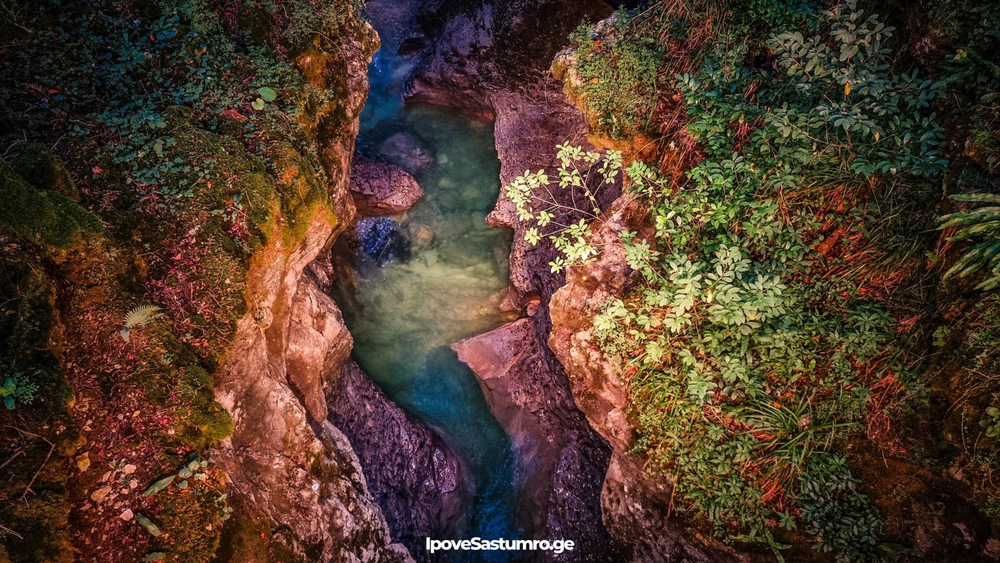
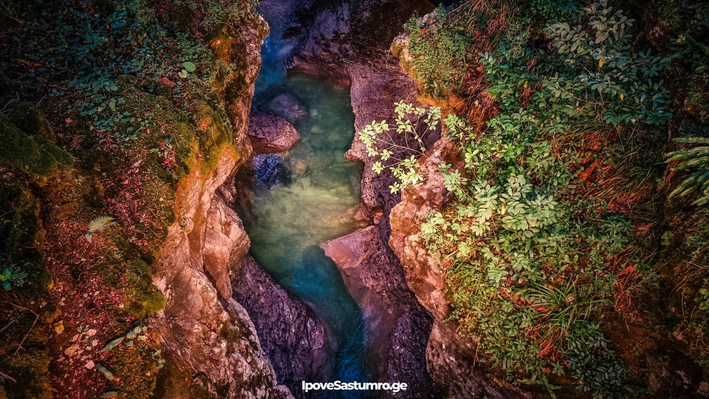
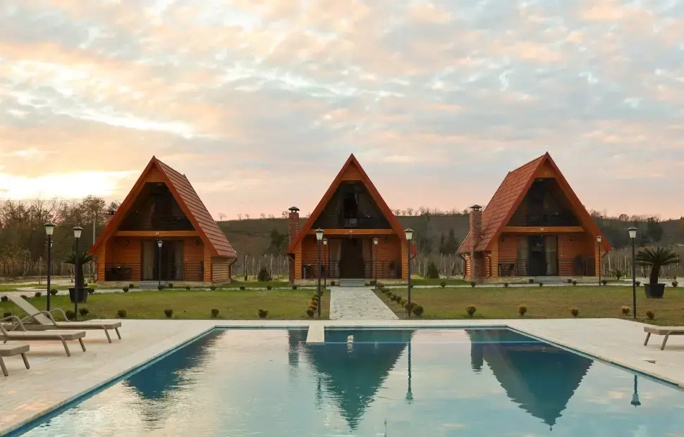

სამეგრელოს შესახებ
სამეგრელო არის დასავლეთ საქართველოს ისტორიული რეგიონი, გამორჩეული თავისი უნიკალური კულტურით, სტუმართმოყვარე ხალხით და დაუვიწყარი ბუნებით. აქ შეხვდებით უძველეს ძეგლებს, ტრადიციულ მეგრულ სოფლებთან და მდიდარ მემკვიდრეობასთან. ეს არის ადგილი, სადაც თანამედროვეობა და ტრადიციები ჰარმონიულად თანაარსებობს.
ფოტო გალერეა
 

ადგილები სანახავად
მარტვილი
მშვენიერი კანიონები და ჩანჩქერები. პოპულარული ტურისტული ადგილი დასავლეთ საქართველოში, რომელიც გამოირჩევა უნიკალური ბუნებით და ისტორიული მემკვიდრეობით.
ლებარდე
ლებარდე დასავლეთ საქართველოში მდებარე მთაგორიანი ადგილია, რომელიც ცნობილია სუფთა ჰაერით, წყაროებით და მშვიდი ბუნებით. სოფელი განსაკუთრებით იზიდავს მათ, ვინც სურს დასვენება ქალაქის ხმაურისგან.

ზუგდიდი
ზუგდიდი დასავლეთ საქართველოს ერთ-ერთი მთავარი ქალაქია, ცნობილი ისტორიული მუზეუმით, დადიანების სასახლით და სამეგრელოს კულტურული ცენტრის როლით.

სასტუმრო და რესტორანი
ტალერის ტერასები
ტალერის ტერასები მარტვილის მახლობლად მდებარე ბუნებრივი სივრცეა, რომელიც გამოირჩევა ლამაზი ხედებით, მწვანე გარემოთი და მშვიდი დასასვენებელი ატმოსფეროთი.
რესტორანი სამეგრელო
ზედმეტად პოპულარულია ზუგდიდში — თუ გინდა ჭამო ტრადიციული მეგრული კერძები, მაგალითად საცივი, ელარჯი ან მეგრული ხაჭაპური, ეს კარგი არჩევანია. ინტერიერი კომფორტულია — მყუდრო + თანამედროვე, იდეალურია მეგობრებთან ან ოჯახთან ვახშმისთვის.